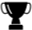

Weixian Liao
Department of Electrical Engineering and Computer Science
Case Western Reserve University
Cleveland, OH 44106
weixian.liao@case.edu
I am a Ph.D. candidate in the Department of Electrical Engineering and Computer science, Case Western Reserve University, supervised by Prof. Pan Li. I received the B.E. degree in information engineering from Xidian University, Xi’an, China, in 2012, and the M.S. degree in Electrical and Computer Engineering from Mississippi State University, Starkville, MS, in 2015, respectively. Here is my current CV.
- EDUCATION
- Ph.D., in Electrical Engineering and Computer Science, Case Western Reserve University, Cleveland, OH, up to now
-
M.S., in Electrical and Computer Engineering, Mississippi State University, Mississippi State, MS, 2015
- B.S., in Information Systems, Xidian University, Xi’an, Shaanxi, China, 2012
-
RESEARCH
INTERESTS - Cybersecurity and optimization in big data applications, machine learning, cyber physical systems, cloud computing and wireless networks.
- NEWS
- 2017/12
- Our paper "Efficient Secure Outsourcing of Large-scale Convex Separable Programming for Big Data" has been accepted by IEEE Transactions on Big Data.
- 2017/11
- Our paper "Economic-Robust Transmission Opportunity Auction for D2D Communications in Cognitive Mesh Assisted Cellular Networks" has been accepted by IEEE Transactions on Mobile Computing.
- 2017/09
- Our paper "Cascading Failure Attacks in the Power System: A Stochastic Game Perspective" has been accepted by IEEE Internet of Things Journal.
- 2017/02
- Our paper "Efficient Secure Outsourcing of Large-scale Sparse Linear Systems of Equations" has been accepted by IEEE Transactions on Big Data.
- 2016/09
- Our paper "CRIL: An Efficient Online Adaptive Indoor Localization System" has been accepted by IEEE Transactions on Vehicular Technology.
- 2016/07
- Our paper "Efficient Privacy-preserving Outsourcing of Large-scale Optimization for Smart Cities" has been accepted by IEEE Smartcity'16.
- 2016/02
- Our paper "Efficient Secure Outsourcing of Quadratic Programs" has been accepted by ASIACCS'16.
Weixian Liao, Sergio Salinas, Ming Li, Pan Li, and Kenneth A. Loparo
Cascading Failure Attacks in the Power System: A Stochastic Game Perspective. to appear in IEEE Internet of Things Journal.Weixian Liao, Changqing Luo, Sergio Salinas, and Pan Li
Efficient Secure Outsourcing of Large-scale Separable Programming for Big Data. to appear in IEEE Transactions on Big Data.Weixian Liao, Ming Li, Sergio Salinas, Pan Li, and Miao Pan
Energy-Source-Aware Cost Optimization for Green Cellular Networks with Strong Stability. IEEE Transactions on Emerging Topics in Computing, Vol. 4, No. 4, pp. 541- 555, Dec. 2016.Sergio Salinas, Chagnqing Luo, Xuhui Chen, Weixian Liao, and Pan Li
Efficient Secure Outsourcing of Large-scale Sparse Linear Systems of Equations. to appear in IEEE Transactions on Big Data.Ming Li, Weixian Liao, Xuhui Chen, Jinyuan Sun, Xiaoxia Huang, and Pan Li
Economic-Robust Transmission Opportunity Auction for D2D Communications in Cognitive Mesh Assisted Cellular Networks. to appear in IEEE Transactions on Mobile Computing.Sheng Cai, Weixian Liao, Changqing Luo, Ming Li, Xiaoxia Huang, and Pan Li
CRIL: An Efficient Online Adaptive Indoor Localization System. IEEE Transactions on Vehicular Technology, Vol. 66, No. 5, pp. 4148- 4160, May 2017.Arun Thapa, Weixian Liao, Ming Li, Pan Li, and Jinyuan Sun
SPA: A Secure and Private Auction Framework for Decentralized Online Social Networks. IEEE Transactions on Parallel and Distributed Systems, Vol. 27, No. 8, pp. 2394- 2407, Aug. 2016.Changqing Luo, Weixian Liao, Sergio Salinas, and Pan Li
Efficient Secure CP Tensor Decompositions for Large-scale Data Analysis. IEEE ICDCS 2018, under review.Weixian Liao, Wei Du, Sergio Salinas, and Pan Li
Efficient Privacy-preserving Outsourcing of Large-scale Optimization for Smart Cities. IEEE Internal Conference on Smart City (SmartCity’16), Sydney, Australia, Dec. 12- Dec. 14, 2016.Sergio Salinas, Changqing Luo, Weixian Liao, and Pan Li
Efficient Secure Outsourcing of Quadratic Programs. ACM Asia Conference on Computer and Communications Security (ASIACCS’ 2016), Xi’an, China, May 30- June 3, 2016. (Acceptance ratio: 73/350=20.9%)Weixian Liao, Ming Li, Sergio Salinas, Pan Li, and Miao Pan
Optimal Energy Cost for Strongly Stable Multi-hop Green Cellular Networks. IEEE International Conference on Distributed Computing Systems (ICDCS’14), Madrid, Spain, June 30- July 3, 2014. (Acceptance ratio: 66/500 = 13%)Sergio Salinas, Changqing Luo, Weixian Liao, and Pan Li,
State Estimation for Energy Theft Detection in Microgrids. International Conference on Communications and Networking in China (ChinaCom’14), Maoming, China, August 14-16, 2014. (Best Paper Award)

IEEE Student Travel Grant, 2014
Journal Reviewer
IEEE Transactions on Smart Grid
IEEE Journal on Selected Areas in Communications
IEEE Transactions on Vehicular Technology
IEEE Transactions on Big Data
IEEE Transactions on Information Forensics and Security
IEEE Transactions on Dependable Computing
IEEE Transactions on Smart Grid
IEEE Journal on Selected Areas in Communications
IEEE Transactions on Vehicular Technology
IEEE Transactions on Big Data
IEEE Transactions on Information Forensics and Security
IEEE Transactions on Dependable Computing